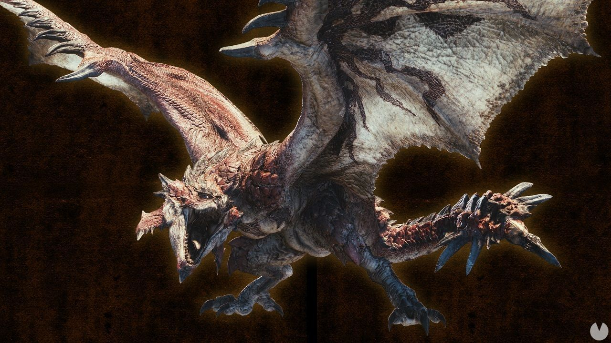

Juegos
Monster Hunter

Monster Hunter, si bien no es solo un juego, es una saga. la recomiendo por la experiencia que me dio, el camino que recorri, los sentimientos que vivi con el.
Yo comenze con el Monster Hunter World, en Steam, a mitad del 2020. Al principio no lo entendia mucho y pensaba que era complicado y lo deje tirado. Hasta que mas adelante en ese mismo año volvi y con ganas de avanzar, vi muchos videos tutoriales y pude asi terminar la historia principal del juego base.
En resumen, Monster Hunter trata de cazar monstruos, lo dice en el titulo, y con las partes que te dan estos monstruos te haces equipo y asi vas avanzando hacia mayores amenazas. Si bien el gameplay puede parecer ser un poco lento al principio, no lo es en lo minimo, ya que existen armas que pueden hacer "parrys" o otras que tienen mucha movilidad, hay variedad de armas, en concreto 14 actualmente, y cada una cambia la manera en que se juega.